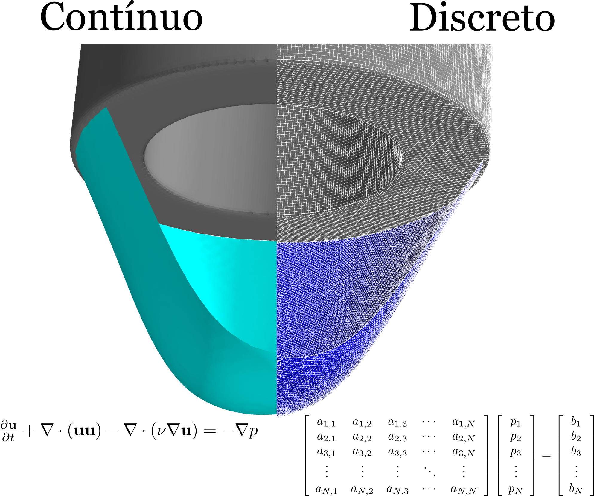
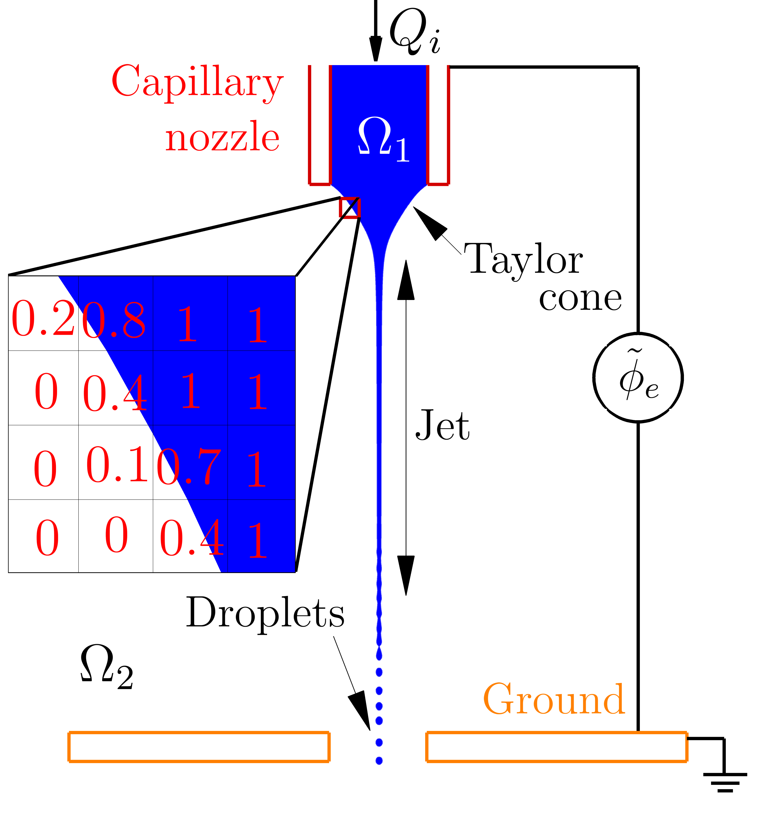
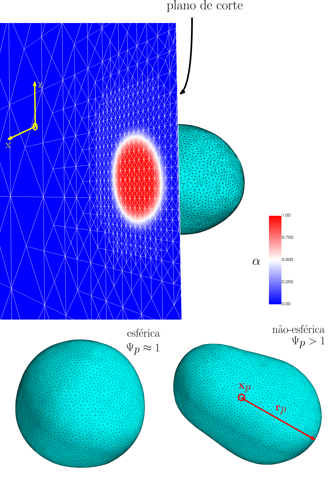

3. Modelling
Mathematical modelling provides a crucial tool for analysing and predicting the behaviour of electrohydrodynamic jets. By implementing theoretical models in simulation environments, it is possible to investigate the most complex characteristics of these jets, such as atomization patterns and droplet formation, without the need to conduct lengthy and expensive experiments.
In this chapter, we present an approach for modelling EHD jets using OpenFOAM as the base code, a well-known numerical simulation software based on the finite volume method (FVM). We present the physical and mathematical model underlying the simulation, discussing the fundamental equations governing the flow and atomization of EHD jets, as well as the specific parameters required for their application.
We also describe the methodology used to implement this model within the OpenFOAM environment, outlining the critical steps required to create and run the simulation, as well as the challenges associated with this implementation. In summary, this chapter presents a proposed simulation model for EHD jets based on:
- Finite Volume Method (FVM);
- Volume of Fluid Method (VoF);
- Algebraic and geometric treatment of the two-phase flow interface;
- Lagrangian Particle Tracking model;
- Hybrid VoF-LPT model.
3.1. Finite Volume Method (FVM)
The basic premise of a numerical method that solves the governing equations of a physical and mathematical problem is to determine the solution within a discretized computational domain, which comprises a finite number of computational nodes in both space and time. In general, the objective is to provide an adequate representation of the solution for the continuous physical domain. This concerns both the precision and accuracy of the approximate numerical solution. Furthermore, it is assumed that as the number of computational nodes increases towards infinity, the approximate numerical solution should converge towards the exact solution. Figure 3.1 illustrates the discretization of the space in which the equations are solved.
The finite volume method (FVM) forms the basis of this work, using a collocated methodology on a polyhedral, unstructured computational mesh with arbitrary mesh elements. The properties defining the fluid dynamics are located at the centroids of the control volumes.
OpenFOAM uses the finite volume method (FVM), with a cell-centred formulation, to solve systems of partial differential equations on structured or unstructured three-dimensional meshes composed of convex cells with arbitrary shapes. This requires discretizing the equation in order to transform one or more governing equations into a corresponding system of algebraic equations that can be solved. For this purpose, the Navier–Stokes equations must be expressed in integral form for a control volume \(V_c\).

3.2. Volume of Fluid Method (VoF)
A particular advantage of the Volume of Fluid method (VoF) is that only one set of equations is used for both phases of the flow because a single state variable is employed. Let us assume that the two-phase fluid system fills the entire computational domain \( \Omega_0 \subset \mathbb{R}^2 \), with two phases \( \Omega_{\{1,2\}} \subset \mathbb{R}^2 \) separated by a region \( \Sigma \subset \mathbb{R}^2 \), which represents the interface between the fluids, such that,
\[ \Omega_0 = \Omega_1 (t) \cup \Omega_2 (t) \cup \Sigma (t). \] The state variable is introduced as \( \alpha \), representing the phase fraction of the flow, and is defined as \[ \alpha (t)=\left\{\begin{array}{ll}{1} & {\text { in } \Omega_{1} (t),} \\ {0} & {\text { in } \Omega_{2} (t),} \\ {\left] 0,1 \right[ } & {\text { in } \Sigma(t)}\end{array}\right. \] The VOF method introduces an additional governing equation for the transport of this volume fraction \(\alpha\), referred to as the convection equation, given by:
3.3. Discrete Particle Method (LPT)
The Lagrangian Particle Tracking method (LPT) follows the motion of Lagrangian fluid elements throughout the computational domain. Each element represents a given number of droplets with identical properties, such as diameter and velocity. They are treated as point masses and therefore have no volume. Their position and velocity are updated at each time step based on differential equations defined for their trajectory and momentum,
\[ \frac{\partial \vec{x}_p}{\partial t} = \mathbf{u}_p, \] \[ m_p \frac{\partial \mathbf{u}_p}{\partial t} = \mathbf{F}_D + \mathbf{F}_G + \mathbf{F}_E, \] where \(m_p\) is the particle mass, while \(\mathbf{u}_p\) and \(\mathbf{x}_p\) are its velocity and position. Three acting forces are considered for each parcel: the drag force \(\mathbf{F}_D\), the force due to the gravitational field \(\mathbf{F}_G\), and the force due to the electrostatic field \(\mathbf{F}_E\).3.3.1 VoF-LPT Conversion Criteria
- Diameter. \( d_p \le d_\text{max} \), where \( d_p = \sqrt[3]{\frac{6 V_p}{\pi}} \)
- Sphericity. \( \Psi_p \le 2 \), where \( \Psi_p = \frac{2 \|\mathbf{r}_p\|_\text{max}}{d_p} \)
- Electric charge. \( q_p \le q_R \), where \( q_R = \left( 8 \pi \varepsilon_0 \gamma d_p^3 \right)^{1/2}\)
